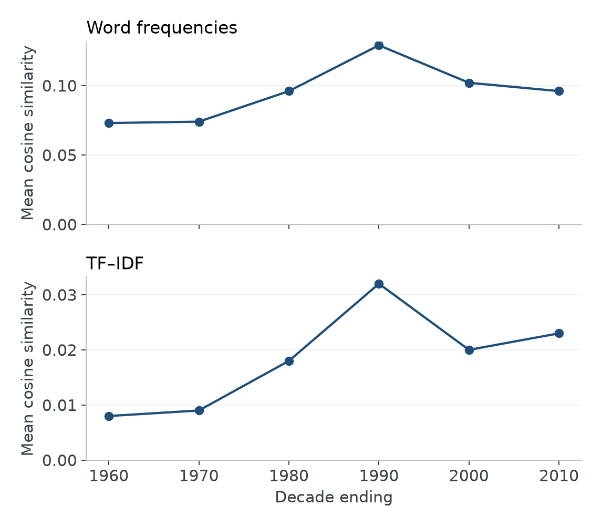
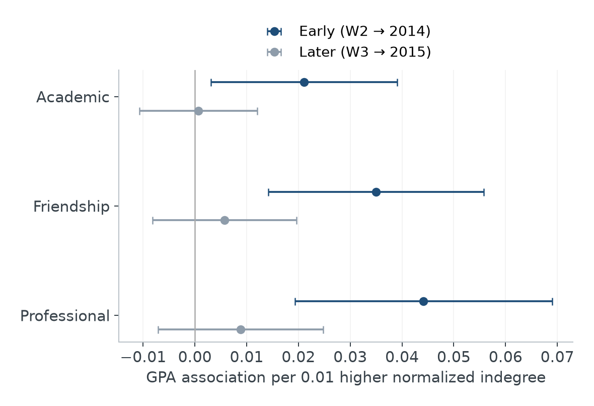

Projects
Research and analytical work on political language, social opportunity, and the institutions and relationships that shape everyday life.
These projects bring substantive questions into conversation with computational and quantitative methods. They include conference research and coursework projects developed during my study.
Machine Learning the Geography of Opportunity in the United States
How well do county characteristics predict the adult income ranks of children from lower-income families? Using 2,518 U.S. counties, this analysis compares linear regression, Lasso, a decision tree, and a random forest. The forest achieves the lowest held-out error, with a modest advantage over the linear models.
Read project →

Comparing Global Preambles with the United States
Constitutional preambles articulate political membership, collective memory, and the purposes of government. This study compares 155 preambles through word frequencies, TF–IDF representations, clustering, and cosine similarity. Argentina and the Philippines are the closest matches to the U.S. preamble under both weighting schemes; the broader rankings and historical patterns depend on how resemblance is measured.
The analysis treats textual similarity as descriptive evidence of shared language. It does not establish borrowing or a causal history of American influence.
Read project →

Mapping the U.S. Supreme Court Citation Network
A precedent can be frequently cited without occupying the same structural position as a case cited by other central decisions. This analysis compares citation counts and PageRank in a directed network of cases, checks their rankings against expert classifications, and traces citations to Brown v. Board of Education over time.
The two centrality measures identify different leading cases. Their partial agreement with expert judgments illustrates why citation prominence captures only one dimension of legal importance.
Read project →

Rural-Origin Children in China
Family migration may expand access to resources while disrupting children's schooling. This study follows rural-origin children in the China Family Panel Studies from 2010 to 2014 and 2020, comparing children who transitioned into migration with those who remained non-migrant.
Matching and difference-in-differences estimation examine short-term parent-rated academic performance; matched logistic models examine later educational attainment. The reported pattern combines a negative short-term estimate with an imprecise long-term association. Causal interpretation depends on the identifying assumptions, including parallel trends, which cannot be directly tested with one pre-treatment wave.
Read project →

Party Patterns and Trump's Rhetoric
Who is included in “we,” and who is positioned as “they”? This study analyzes U.S. presidential campaign rhetoric through a party–month panel, examining pronoun balance, references to elites and “the people,” and an Exclusionary Populism Index. It situates Trump's language within a longer history of partisan boundary-making.
Dictionary measures and lagged models connect lexical patterns to questions of political membership. The temporal comparisons describe associations rather than causal effects of candidates or historical events.
Read project →

Candidates, Election Cycles, and Historical Change
How do policy, threat, and grievance organize campaign speeches? This analysis combines rhetorical dictionaries with structural topic models to compare Trump with Clinton, Biden, and Harris, and to examine variation across Trump's three campaigns between 2015 and 2024.
Separate comparisons address candidate differences, election cycles, and the periods before and after March 2020. Topic labels require contextual interpretation, and the historical comparison does not identify a pandemic effect.
Read project →

Evidence from a Cohort-Based MSW Program
Students' positions in academic, friendship, and professional networks may reflect both access to support and prior achievement. Using repeated peer nominations and GPA records, this study examines whether network prominence remains associated with later grades after accounting for earlier performance.
Early centrality is positively associated with subsequent GPA in separate adjusted models. Later associations weaken substantially after controlling for prior in-program GPA, underscoring the difficulty of separating peer selection from influence.
Read project →

Customer Experience, Repurchase Intentions, and Complaints
How do evaluations of quality and value relate to satisfaction, willingness to repurchase, and complaint behavior? This analysis studies these distinct responses using 7,700 customer records, combining linear and penalized regression for rating outcomes with tree-based models for complaints.
Correlated experience measures and an uneven distribution of complaints make model interpretation and evaluation central to the research question. Repurchase intention is treated as a reported attitude, and the models describe predictive associations rather than the effects of service interventions.
Read project →

Social Support, Self-Esteem, and Student Stress
Academic workload is one part of a wider set of pressures and resources associated with student stress. This study uses 1,100 records from the Student Stress Monitoring dataset to examine high stress in relation to psychological measures, academic demands, and social circumstances.
Reported models associate social support and self-esteem with lower likelihood of high stress, and headache and peer pressure with higher likelihood. These cross-sectional associations motivate further research; they do not establish that changing a predictor would reduce stress.
Read project →

← Back to selected projects